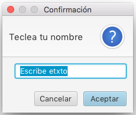
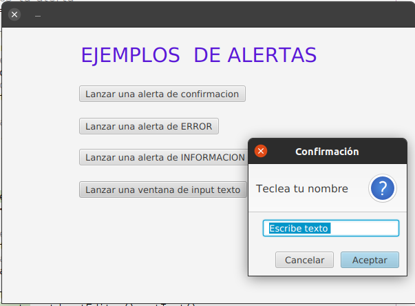

JavaFX TextInputDialog
TextInputDialog es un cuadro de diálogo que permite al usuario introducir un texto, el cuadro de diálogo contiene un texto de encabezado, un TextField y botones de confirmación.
Los constructores de la clase TextInputDialog son:
TextInputDialog() : crea un cuadro de diálogo de entrada de texto sin texto inicial.
TextInputDialog(String txt) : crea un cuadro de diálogo de entrada de texto con el texto inicial txt .
Métodos comúnmente utilizados:
- String getDefaultValue() devuelve el valor predeterminado del TextInputDialog
- setHeaderText(String s) establece el texto del encabezado del TextInputDialog
- TextField getEditor() Devuelve el campo de texto utilizado en este cuadro de diálogo.
Por ejemplo:
// create a text input dialog
TextInputDialog td = new TextInputDialog("Escribe texto");
// setHeaderText
td.setHeaderText("Teclea tu nombre ");
td.show();
Resultado:

Pero lo realmente interesante de esta ventana de diálogo es recoger el texto que el usuario teclee, para ello utilizaremos el método getEditor() que nos proporciona un objeto TextField, y de este último objeto con su método getText() podremos acceder al contenido introducido:
// create a text input dialog
TextInputDialog td = new TextInputDialog("Escribe texto ");
// setHeaderText
td.setHeaderText("Teclea tu nombre ");
td.showAndWait();
respuesta = td.getEditor().getText();Pero con recoger ese literal no es suficiente, debemos saber si el usuario ha aceptado o cancelado la entrada. Para ello debemos utilizar el método showAndWait() y recoger el Optional<String> que nos devuelve en esta ocasión el método showAndWait().
El método isPresent() del objeto Optional<String> nos devolverá True si el usuario a aceptado la entrada y False en caso contrario.
String respuesta = null;
Optional<String> result;
// create a text input dialog
TextInputDialog td = new TextInputDialog("Escribe texto ");
// setHeaderText
td.setHeaderText("Teclea tu nombre ");
result = td.showAndWait();
if (result.isPresent()){
respuesta = td.getEditor().getText();
System.out.println(respuesta);
}
else{
System.out.println("Has pulsado Cancelar");
}